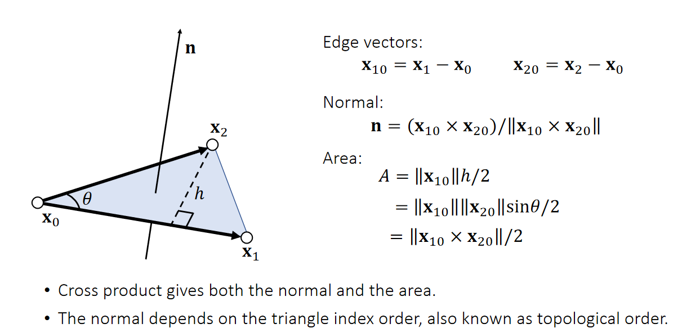
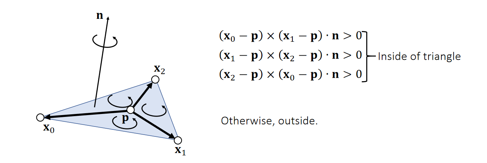
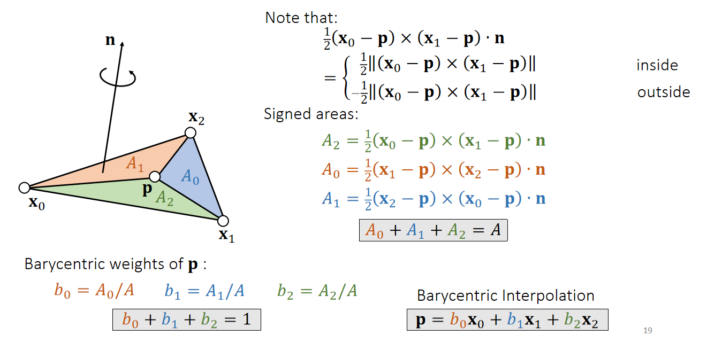
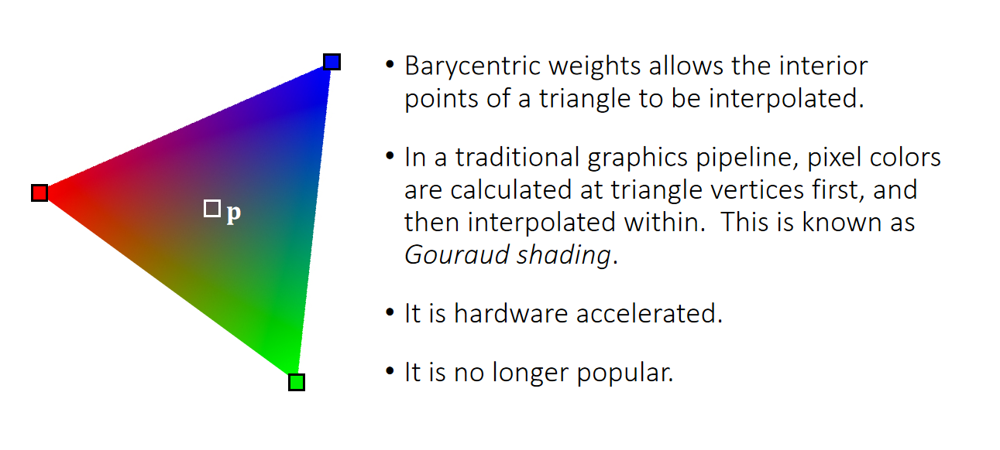
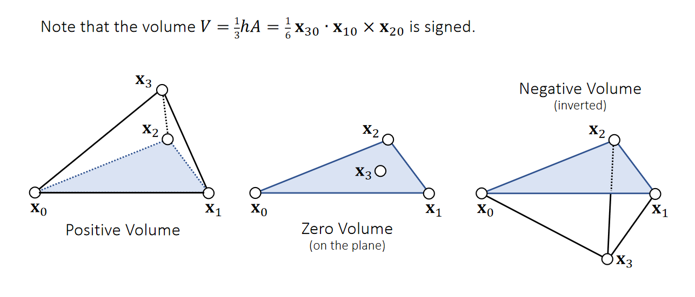
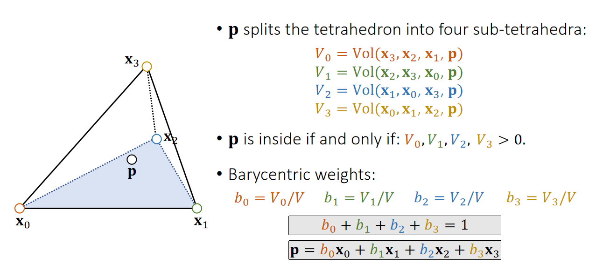
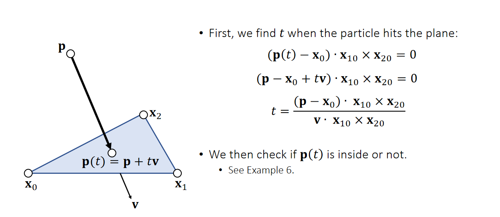
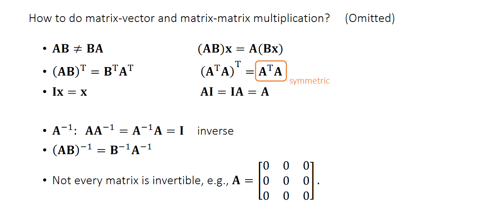
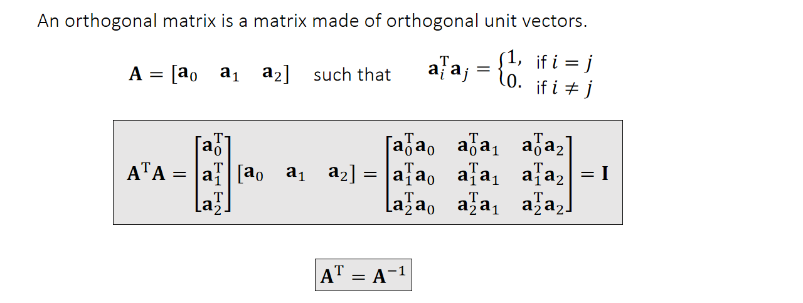

本文不保证完全正确。
# Vector
# norm 范数
学习资料：线性代数 - 范数 (2) 向量范数
p-norm 定义：
常见的 1-norm 就是 ，2-norm 就是，而 -norm 则是
# dot 点乘
两个向量点乘，可以写成前一个向量的转置成后一个向量：
一个向量乘它的转置，其几何意义是什么？
# cross 叉乘
向量的叉乘也可以使用叉乘矩阵来表示成一个矩阵和向量乘积的形式：
# 应用
定义三角形法向量、计算面积。

判断点和三角形的相对位置：

Barycentric Coordinates 计算重心坐标：

Gouraud Shading

重心坐标提供了 Gouraud Shading 的做法，也就是从三角形的三个顶点的颜色值计算得到三角形内任意一点的颜色值。
Tetrahedral 四面体

可以利用四面体的三条边进行点乘、叉乘的操作来计算四面体的体积。

同样，用相同的方法来计算任意一点对于这个四面体的重心坐标。
计算直线与平面交点

可以利用四面体体积为零来计算直线和三角形所在平面的交点。
# Matrix
# Defination
Symmetric 对称矩阵：以主对角线为对称轴，各元素对应相等的矩阵。
Diagonal 对角矩阵：主对角线之外的元素都为零的矩阵。
Orthogonal 正交矩阵：其转置等于其逆的矩阵。（图形学中的旋转矩阵是正交矩阵）
叉乘矩阵：叉乘矩阵可以将两个向量的相乘转换为矩阵与向量的相乘。
反对称矩阵： A^T = -A ，则 A 是反对称矩阵。主对角线上的元素全为零，而关于主对角线对称的元素反号。
矩阵的迹：nxn 矩阵对角线上的元素和。
矩阵的秩：线性无关的纵列的极大数。类似的，行秩是线性无关的行的极大数。
矩阵的特征值和特征矩阵：A 是 n 阶矩阵，如果存在数 m 和非零 n 维向量 x，使得 Ax=mx 成立，那么 m 是 A 的一个特征值 or 本征值，x 是 A 的一个特征向量。
线性代数精华 —— 矩阵的特征值与特征向量

任意矩阵 A，则 是一个对称矩阵，因为它的转置等于它自己：

正交矩阵由互相正交的单位向量组成。（上图小写 a 表示纵向的三维向量，互相正交）（个人感觉把正交矩阵定义为 列（行）向量组是单位正交向量组的矩阵是正交矩阵 更顺口，不过反正和 是等价的）。
参考资料：
markdown 公式编辑
GAMES101
GAMES103